5580C air bag system
- Path
- Descriptions > 55 ELECTRICAL EQUIPMENT > 5580 SPECIAL ACCESSORIES > 5580C air bag system
- Kind
- system description
- Applies to
- all engines; all production periods
- Interactive page
- https://sloeber94.github.io/elrnDB-a156/en/#/3232972
Applies to: all engines; all production periods
The car may be fitted with an electronically-controlled safety system that sets off the front seat belt pretensioners and the driver's air bag, passenger air bag and sidebags in the case of frontal and/or side impact of a certain severity.
The passenger Air Bag can be deactivated:
- manually, by means of a special switch,
- automatically by a sensor located in the seat (only up to 5/99).
The system consists of the following components:
- Electronic cotnrol unit
- driver Air Bag
- Passenger side air bag
- Left belt pretensioner
- Right belt pretensioner
- switch for disabling passenger Air Bag
- Sensor for automatically disabling passenger side Air Bag (only up to 5/99)
The system is connected with the:
- Diagnostic socket for checking the system with the Examiner or other diagnostic equipment
- Warning light in the instrument panel for signalling faults
- Warning light in the instrument panel for indicating passenger Air Bag disabled.
The system components are interconnected and are connected to the rest of the electrical equipment by means of special wiring which can be easily recognized as it has a yellow coloured outer casing.
there are two possible configurations for the system.
- the standard configuration, fitted as standard, where there is a driver's Air Bag and two pretensioners.
- the complete configuration, which is optional and where there is also a passenger Air Bag and disabling devices.
System components
Refer to the illustration
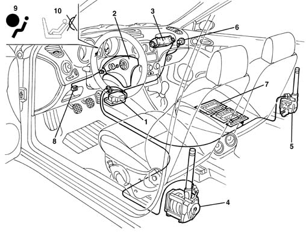
1, Electronic control unit 2, Driver's Air Bag 3, Passenger Air Bag 4, Left seat belt pretensioner 5, Right seat belt pretensioner 6, Switch disabling passenger Air Bag 7, Passenger air bag automatic disablement sensor 8, Diagnostic socket for checking the system 9, Warning light in the instrument panel for signalling faults 10, Warning light in the instrument panel for signalling passenger Air Bag disabling
Electronic cotnrol unit
An electronic control unit manages the entire system by controlling all the components and activating the restraint systems (pretensioners and airbags) as necessary.
Operation
Inside the control unit, there is an accelerometric sensor whose signal, suitably processed by a microprocessor, makes it possible to determine the severity of an impact and consequently to decide whether or not to activate the Air Bags.
A second sensor with safety functions gives the enablement for activation of the Air Bags.
The control unit has two different intervention levels:
- at the first level only the pretensioners are activated
- the second level operates both airbags and pretensioners.
Control unit specifications
- Energy accumulation: the control unit receives a 12 V supply with the ignition in the ON position, but it still operates for a further 220 msec approx after the supply is cut off.
This is possible thanks to the presence of a buffer condenser which accumulates sufficient electrical energy to produce the Air Bag activating signal.
The operation of the system is therefore guaranteed even if the impact causes a fall in the system voltage (e.g. battery damaged or broken, break in the supply cables, etc.).
- Fixing check: the control logic also checks the electrical contact between the control unit casing and the bodywork, thus ensuring a rigid connection to the bodyshell.
- Failure memory: whilst the vehicle is running, the electronic continuously carries out the system fault diagnosis, checking the continuity of the circuits and components.
If a fault is detected it is memorized and the "Air Bag failure" warning light in the instrument panel comes on at the same time.
The failure memory can be consulted by connecting the diagnostic equipment (Examiner or S.D.C.) to the diagnostic socket, as described below.
- Crash memory: the control unit's microprocessor carries out complex calculation and check algorithms on the signal coming from the accelerometer sensor, and determines the severity of a crash. According to the severity and, with the go-ahead of the safety sensor, it sends a signal to activate the Air Bags.
This activation order is stored in a special crash memory which contains information relating to the exceeding of the intervention thresholds and the go ahead for the safety sensor.
- Wiring recognition: the control unit can recognize the type of system installed: complete system with 4 modules (2 Air Bags and 2 pretensioners) or reduced system without passenger Air Bag. This takes place via a specific recognition pin on the control unit: pin 30 earthed means passenger's Air Bag present, while pin 30 open means passenger's Air Bag absent.
Control unit pin-out
Refer to the illustration
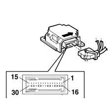
30-way connector 1, Driver's Air Bag activation (-) 2, Driver's Air Bag activation (+) 3, Passenger Air Bag activation (-) 4, Passenger Air Bag activation (+) 5, Passenger Air Bag disabling device (-) 6, Passenger pretensioner activation (+) 7, Passenger pretensioner activation (-) 8, Earth for fault diagnosis (Not connected) 9, Diagnostic line K 10, Driver's pretensioner activation (+) 11, Driver's pretensioner activation (-) 12, Crash output (N.C.) 13, Air Bag system failure warning light signal 14, Earth 15, Supply controlled by the ignition 16, Driver's Air Bag S.C. 17, Driver's airbag S.C. 18, Passenger airbag S.C. 19, Passenger airbag S.C. 20, Passenger Air Bag disabling warning light signal 21, Passenger side pretensioner S.C. 22, Passenger side pretensioner S.C. 23, Passenger presence sensor signal (up to 11/99) 24, Passenger Air Bag disabling device (+) 25, Driver side pretensioner S.C. 26, Driver side pretensioner S.C. 27, Passenger presence sensor signal (up to 11/99) 28, Failure warning light S.C. 29, Earth S.C. 30, Wiring recognition signal
For further details see wiring diagram, function E7030 AIRBAG
Driver Air Bag
The Air Bag is a passive safety device made up of a bag which, in the case of a frontal impact, automatically inflates placing itself between the bodies of the vehicle occupants and the structure of the front part of the passenger compartment.
The driver's Air Bag module is located in the centre of the steering wheel; it is fitted on a tilting plate which enables the horn to be operated.
The plate, fixed to the steering wheel by two bolts, houses the metal container with the folded bag and the gas generator device.
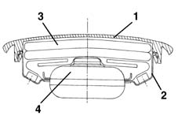
1, Cover 2, Metal container 3, Folded bag 4, Gas generator
The gas generator can be electrically activated by a signal coming from the electronic control unit.
A propellent charge is then triggered, which releases a compressed gas (Argon) which expands in the bag which has a total capacity of around 45 litres.
The bag deflates immediately after it has been inflated, thanks to the permeable nature of the material from which it is made.
The module plastic cover opens upwards along the pre-determined breakage lines which allow the bag to come out completely.
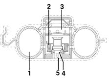
1, Compressed argon 2, Propellant charge 3, Inflation openings 4, Electrical primer 5, Electrical connection
Clock spring
A clock spring device allows the Air Bag module connecting cables, fitted in the steering wheel, to follow the rotation of the latter without danger of breaking.
This device is fitted on the steering column switch unit and consists of two plates, the lower one fixed to the steering column switch unit and the upper wheel fixed to the steering wheel.
The module connecting cables and the horn buttons are wound around inside the two plates allowing them to follow the movement of the steering wheel.
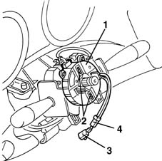
1, Clock spring 2, Safety springs 3, Air Bag electrical connection 4, Horn electrical connection
This prevents the top plate, no longer attached to the steering wheel, from rotating freely and so winding or unwinding the clock spring which might then break.
When refitting the steering wheel, the device automatically unlocks.
If, for any reaon, the upper plate rotates in relation to the lower one and its original position prior to removal can no longer be identified, it is essential to replace the clock spring.
For further details see op 5580C12 clock spring for air bag module on steering wheel r r
T2 Passenger Side Air Bag
The passenger airbag is located on the facia, above the glove compartment.
The composition and operation are the same as the driver's Air Bag, except for the dimensions of the bag which is larger: about 90 litres.
The passenger module is fixed directly to the vehicle crossmember by a special bracket.
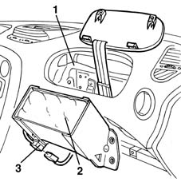
1, Vehicle crossmember 2, Passenger Air Bag module 3, Electrical connection
Module flap
A padded flap which is integrated in the dashboard allows the bag to come out correctly when it inflates.
It is connected to the actual dashboard by means of two hooks and two springs with a pre-set yield point. It is also fixed to the crossmember by a bracket and three retaining belts, which prevent the inflation of the bag detaching the flap from the dashboard.
In the case of the intervention of the Air Bag, the flap opens upwards, breaking the two springs, thereby allowing the bag to come out completely and correctly.
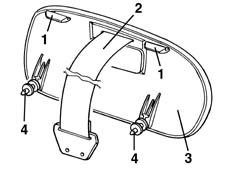
1, Retaining hooks 2, Retaining belts 3, Flap 4, Clips with pre-established break point
Passenger air bag disablement
There are two methods for excluding the activation of the passenger Air Bag by the control unit:
- manual: using the key
- automatic: through a special sensor on the seat (present up to 5/99).
The manual intervention voluntarily and temporarily excludes the operation of the passenger Air Bag.
The automatic intervention prevents the intervention of the passenger Air Bag if the front seat is empty, in order to reduce vehicle repair costs following the passenger Air Bag being activated unnecessarily.
Passenger airbag manual disablement switch
A switch which can be operated by the vehicle key allows the passenger Air Bag to be enabled (ON) or disabled (OFF). It is positioned at the edge of the dashboard, passenger side, and is only accessible with the door open.
In this case, the control unit excludes the activation of the passenger Air Bag, but enables the operation of the pretensioner: this is because if a passenger is present, but the switch has been incorrectly turned OFF, the Air Bag does not intervene, but at least the pretensioner does.
When the key is turned to OFF, the control unit also controls the activation of a passenger air bag disablement warning light on the instrument panel.
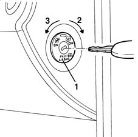
1, Switch with key 2, OFF Position: Passenger Air Bag disabled 3, ON Position: Passenger Air Bag enabled
Automatic passenger air bag disablement sensor (present up to 5/99).
A sensor for detecting the presence of a passenger is fitted in the seat, between the upholstery and the covering: it consists of numerous cells distributed throughout part of the seat which is "sat on" (the flat centre section).
The sensor is the resistive type, made up of electrical resistances which vary with the pressure applied.
The control unit "reads" the sensor resistance, detecting whether or not a passenger is present.
When it detects the "no passenger present" condition constantly for at least 30 seconds, the control unit excludes the operation of the passenger Air Bag and the pretensioner.
If the sensor then detects the "passenger present" condition, the control unit immediately reactivates the passenger Air Bag, and the pretensioner.
If there is a change from the "not present" condition to the "passenger present" condition with the ignition switch in the ON position, the control unit makes the "passenger Air Bag disabled" warning light in the instrument panel flash for 4 seconds.
This does not take place in the reverse situation (change from "present" to "not present").
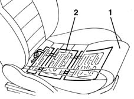
1, Seat 2, Plate containing resistance cells
Pre-tensioners
Pretensioners are pyrotechnic devices which can be electrically activated by a signal coming from the electronic control unit integrated in the front seat belt reel.
They intervene, in the case of an impact of a certain magnitude, to recover the inevitable extension of the belts due to the action of the body weight, keeping the body close to the seat backrest.
At the end of the operation, the belt remains locked, thereby signalling that the device has been operated.
Operation
The gas generator consists of a detonator which can be electrically activated by a signal coming from the electronic control unit.
The pressure of the gas which is produced by the generator acts on the surface of a piston and creates a force which moves it upwards, within a special cylinder.
The movement of the piston upwards, affects a steel cable, the end of which is fixed to the flange of the winder reel. This produces a rotary movement of the reel, instantly rewinding the belt by several centimetres.
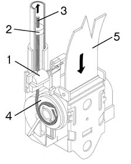
1, Gas generator 2, Piston 3, Steel cable 4, Winder reel 5, Seat belt
Air bag system fault warning light
During starting (key in ON position), the red coloured "Air Bag failure" warning light comes on for about 4 seconds (initial self-test stage) and then goes out.
The warning light remains on or comes on, during the normal operation of the vehicle, in the following cases:
- the control unit detects a fault in the Air Bag system
- the control unit detects an impact which activates the system, even partially (pretensioners only)
- the control unit detects a fault in the actual warning light connection circuit.
Once the fault is signalled, the warning light remains on until the fault is repaired or cancelled from the errors memory using the Examiner or other diagnostic equipment.
Passenger air bag disablement warning light
During starting (key in ON position), the orange coloured "passenger Air Bag disabled" warning light comes on for around 4 seconds.
- if the key for the manual disabling of the passenger Air Bag is switched OFF, the warning light remains on.
- if, on the other hand, the key is switched ON, the warning light flashes for a further 4 seconds and then goes out (only up to 5/99).
If, with the key in the ON position, the automatic passenger Air Bag disabling sensor signals a change from the "empty" to the "occupied" condition, the control unit makes the warning light flash for 4 seconds.
The diagram illustrates the logic for switching on the warning lights starting with the "ignition in the ON position".
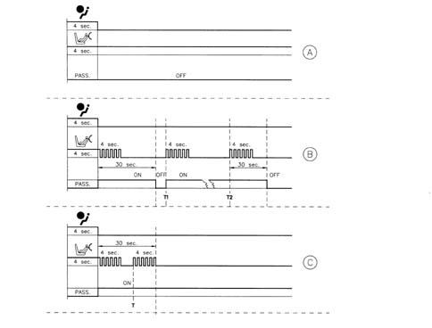
A, Disabling key in OFF position: seat empty or occupied B, Disabling key in ON position: seat empty, then occupied (T1), then empty again (T2) C, Disabling key in ON position: seat empty, then occupied (T) within 30 seconds PASS., passenger Air Bag enabled = ON, disabled = OFF
System self-test
The control unit carries out a continuous self-test of the system's operation. In particular:
- it detects and memorizes any faults
- it recognizes the various components and the type of fault
- it signals the onset of these faults via the special warning light in the instrument panel:
- if a fault is detected with the manual disabling switch, it is considered in the OFF state and therefore the operation of the passenger Air Bag is inhibited.
- if a fault is detected in the automatic disabling sensor, then the command is sent to the modules according to the normal operation.
The faults stored in the control unit memory can be cancelled, after the fault has been repaired, using the Examiner or other diagnostic equipment.
System activations following a particularly serious impact are memorized by the control unit.
In the case of an impact which has caused the complete system to be activated (Air Bag and pretensioners) it is not possible to cancel the control unit memory and it must therefore always be replaced.
If, on the other hand, only the pretensioners are activated, the memory can be cancelled twice. The control unit only has to be replaced if it is activated a third time.
AIR BAG SYSTEM COMPLETE WITH SIDEBAGS
The car may be equipped with a full safety system consisting of:
- front seat belt pretensioners
- Front driver and passenger airbags
- Side Bags
The system operates:
- the front seat belt pretensioners in the case of frontal impact of a certain severity. together with the driver and passenger airbags.
- In the case of a side impact of a certain magnitude, the corresponding side Air Bag is activated (only on the side where the impact has taken place).
The system consists of the following components:
- Electronic control unit
- driver Air Bag
- Passenger side air bag
- Left belt pretensioner
- Right belt pretensioner
- switch for disabling passenger Air Bag
- Passenger air bag automatic disablement sensor (only up to 5/99)
- Side impact sensor on left door pillar
- Side impact pillar on right door pillar
- Right sidebag
- Left sidebag
The system is connected with the:
- Diagnostic socket for checking the system with the Examiner or other diagnostic equipment
- Warning light in the instrument panel for signalling faults
- Warning light in the instrument panel for indicating passenger Air Bag disabled.
The system components are interconnected and are connected to the rest of the electrical equipment by means of special wiring which can be easily recognized as it has a yellow coloured outer casing.
Three system configurations are available.
- the "standard" configuration., fitted as standard, where there is a driver's Air Bag and two pretensioners.
- the configuration with passenger airbag, with disablement devices,
- the full configuration, with passenger airbag and two sidebags.
Warning: When operations are carried out on the Air Bag system, the recommended safety instructions must be followed precisely. For further details see PROCEDURES 5580C
System components
Refer to the illustration
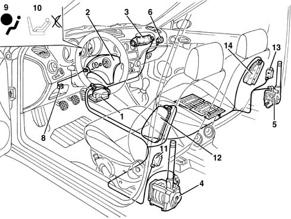
1, Electronic control unit 2, Driver's Air Bag 3, Passenger Air Bag 4, Left seat belt pretensioner 5, Right seat belt pretensioner 6, Switch disabling passenger Air Bag 7, Passenger air bag automatic disablement sensor 8, Diagnostic socket for checking the system 9, Warning light in the instrument panel for signalling faults 10, Warning light in the instrument panel for signalling passenger Air Bag disabling 11, Side impact sensor on left door pillar 12, Left Side Air Bag capsule 13, Side impact pillar on right door pillar 14, Right Side Air Bag capsule
Electronic control unit
An electronic control unit manages the entire system by controlling all the components and activating the restraint systems (pretensioners and airbags) as necessary.
Operation in the case of frontal impact
Inside the control unit, there is an accelerometric sensor whose signal, suitably processed by a microprocessor, makes it possible to determine the severity of an impact and consequently to decide whether or not to activate the Air Bags.
A second sensor with safety functions gives the enablement for activation of the Air Bags.
The control unit has two different intervention levels:
- at the first level only the pretensioners are activated
- the second level operates both airbags and pretensioners.
The control unit only detects frontal impacts. In the case of side impacts, collisions or the vehicle overturning, it does not activate the system.
Operation in the case of side impact
Accelerometers on both front door pillars detects side impacts and sends a signal to the control unit.
This signal is processed by a microprocessor inside the control unit. this detects the severity of the side impact and decides whether to set off the sidebag on the side where impact took place. The side bag can only be set off if activation is enabled by the safety sensor.
Individual sidebags work independently of one another and independently of the front airbags and pretensioners
Control unit pin-out
Refer to the illustration
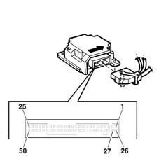
50-way connector 1, Driver's pretensioner activation (+) 2, Passenger pretensioner activation (-) 3, Passenger pretensioner activation (+) 4, Passenger pretensioner activation (-) 5, Supply controlled by the ignition 6, Passenger's Air Bag disablement device (-) 7, Air Bag system failure warning light signal 9, Diagnostic line K 10, Driver's Air Bag activation (+) 11, Driver's Air Bag activation (-) 12, Passenger Air Bag disabling device (+) 13, Passenger Air Bag activation (+) 14, Passenger Air Bag activation (-) 15, Passenger presence sensor signal (up to 11/99) 16, Driver sidebag activation (+) 17, Driver sidebag activation (-) 18, Passenger Side Bag activation (+) 19, Passenger Side Bag activation (-) 22, Driver's side sensor supply 25, Passenger side sensor supply 24, Driver's side sensor earth 25, Passenger side sensor earth 26, Driver side pretensioner S.C. 27, Driver side pretensioner S.C. 28, Passenger side pretensioner S.C. 29, Passenger side pretensioner S.C. 31, Earth S.C. 32, Failure warning light bulb S.C. 33, Passenger's Air Bag disablement warning light signal 34, Crash output (N.C.) 35, Driver's airbag S.C. 36, Driver's airbag S.C. 37, Passenger presence sensor signal (up to 11/99) 38, Passenger airbag S.C. 39, Passenger airbag S.C. 40, Wiring recognition signal 41, Driver's sidebag S.C. 42, Driver's sidebag S.C. 43, Passenger sidebag S.C. 44, Passenger sidebag D.C. 45, Crash input (N.C.)
For further details see wiring diagram, function E7030 AIRBAG
Side bags
Impact sensors
There is an accelerometric sensor on the two front door pillars which, in the case of a side impact, transmits a signal to the control unit.
This signal is also processed inside the control unit which, as a result, decides on the operation of the side Air Bag on the side where the impact has taken place.
The control unit., is fitted with a second safety sensor which detects side impact (in the same way as the front impact sensor) and enables the sidebag on side where the impact is detected
This sensor is positioned in such a way that it detects iimpact only on the side where it is located: e.g. the sensor on the driver's pillar detects only impact from the right and does not detect impact from the left.
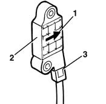
1, Arrow indicating the direction of travel 2, Sensor 3, Electrical connection
Sidebag module
The sidebag is housed in the outer part of each of the front seats.
It consists of a container which houses the gas generator and the folded bag.
This container is enclosed inside a special outer cover, which complements the seat trim.
The gas generator consists of a detonator which can be electrically activated by a signal coming from the electronic control unit.
A propellent charge is then triggered, which releases a compressed gas (Argon). This expands into the bag, which is smaller than the front bag.
After being inflated by the gas, the bag deflates immediately through a hole on the rear.
The module plastic cover opens upwards along the pre-determined breakage lines which allow the bag to come out completely.
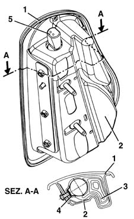
1, Outer cover 2, Container 3, Folded bag 4, Gas generator 5, Electrical connection
Passenger side air bag disablement
Passenger airbag manual disablement switch
In the case of disablement (OFF) the control unit excludes the activation of the passenger Air Bag, but enables the regular operation of the pretensioner and side bag: this is because if a passenger is present, but the switch has been incorrectly turned OFF, the front Air Bag will not operate, but at least the pretensioner and the side bag will be activated.
Automatic passenger air bag disablement sensor (present up to 5/99)
When it detects the "no passenger present" condition constantly for at least 30 seconds, the controlo unit excludes the operation of the passenger Air Bag, the pretensioner and the Side Bag.
If the sensor then detects the "passenger present" condition, the control unit immediately reactivates the passenger Air Bag, the pretensioner and the Side Bag.
System self-test
In the case of an impact which has caused the complete system to be activated (Air Bag and pretensioners) it is not possible to cancel the control unit memory and it must therefore always be replaced.
If, on the other hand, only the pretensioners are activated, the memory can be cancelled twice. The control unit only has to be replaced if it is activated a third time.
As in the case of a side impact, the memory can be cancelled twice. Only in the case of a third activation, irrespective of which of the two sides it involves, should the control unit be replaced.
Applies to: all engines; all production periods; only with equipment: Head Bag
CONSTRUCTION FEATURES
AIR BAG SYSTEM COMPLETE WITH HEAD BAGS
The vehicle is equipped with an even more extensive safety system consisting of:
- front seat belt pretensioners
- front driver and passenger Air Bags.
- Side Air Bags
- Head Bags
The system operates:
- in the case of a frontal impact of a certain magnitude, the front seat belt pretensioners and the driver and passenger Air Bags.
- in the case of a side impact of a certain magnitude, the side Air Bag, located in the seat, and the Head Bag, located in the roof panel, on the side of the impact are activated. The Head Bag protects the top area of both the front seat and the rear seat on the side the impact takes place.
System components
Refer to the illustration
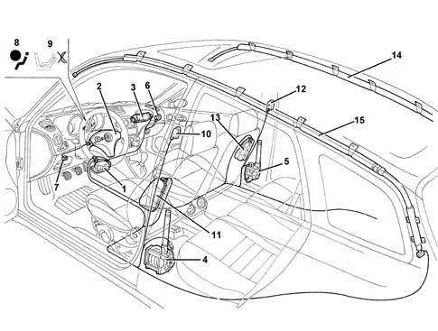
1 - Electronic control unit 2 - Driver's Air Bag 3 - Passenger Air Bag 4 - Left seat belt pretensioner 5 - Right seat belt pretensioner 6 - Switch disabling passenger Air Bag 7 - Diagnostic socket for checking the system 8 - Warning light in the instrument panel for signalling faults 9 - Warning light in the instrument panel for signalling passenger Air Bag disabling 10 - Side impact sensor on left door pillar 11 - Left Side Air Bag capsule 12 - Side impact pillar on right door pillar 13 - Right Side Air Bag capsule 14 - Right Head Bag 15 - Left Head Bag
Electronic cotnrol unit
An electronic control unit manages the entire system by controlling all the components and activating the restraint systems (pretensioners and airbags) as necessary.
Operation in the case of frontal impacts
There is an accelerometer sensor inside the control unit whose signal, suitably processed by a microprocessor, makes it possible to determine the extent of an impact and, consequently, to decide whether to activate the pretensioners and the Air Bags.
A second sensor with safety functions gives the enablement for activation of the Air Bags.
The control unit has two different intervention levels:
- at the first level only the pretensioners are activated
- the second level operates both airbags and pretensioners.
Operation in the case of side impact
Accelerometers on both front door pillars detects side impacts and sends a signal to the control unit.
This signal is processed by a microprocessor inside the control unit. This detects the severity of the side impact and decides whether to set off the Side Bag and the Head Bag on the side where impact took place, but only if the safety sensor gives the go ahead.
Control unit pin-out
Refer to the illustration
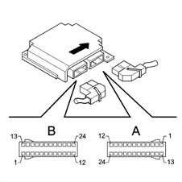
CONNECTOR A (24 way)
6, Earth
7, Supply controlled by the ignition
9, Diagnostic line K
11, Passenger Air Bag disabling signal
12, Passenger Air Bag disabling warning light signal
13, Driver's Air Bag activation (+)
14, Driver's Air Bag activation (-)
15, Passenger Air Bag activation (+)
16, Passenger Air Bag activation (-)
17, Air Bag system failure warning light signal
CONNECTOR B (24 way)
1, Driver's side sensor signal (+)
2, Driver's side sensor signal (-)
3, Passenger side sensor signal (+)
4, Passenger side sensor signal (-)
13, Driver's pretensioner activation (+)
14, Driver's pretensioner activation (-)
15, Passenger pretensioner activation (+)
16, Passenger pretensioner activation (-)
17, Driver;s Side Bag activation (+)
18, Driver's Side Bag activation (-)
19, Passenger Side Bag activation (+)
20, Passenger Side Bag activation (-)
21, Driver's Head Bag activation (+)
22, Driver's Head Bag activation (-)
23, Passenger Head Bag activation (+)
24, Passenger Head Bag activation (-)
For further details see wiring diagram, function E7030
Head bag
The Head Bag provides further protection for the occupants of the front seats and also for the occupants of the rear seats in the case of a side impact.
In particular, it makes it possible to improve the degree of protection for the occupants of the front seats because, in addition to the chest area which is already protected by the Side Bags, it also protects the head.
It also offers the first protection to the occupants of the rear seats.
The device consists of a Head Bag curtain which inflates and positions itself between the occupant's head and the side windows.
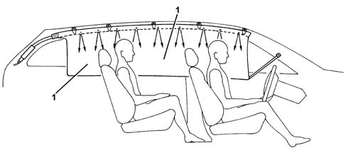
1 - Head Bag curtain in maximum inflation position
The Head Bag folded bag is located under the roof panel, whilst the rear pillar houses the gas generator.
The module containing the bag is shaped like a long tube: it is fastened at five anchorage points to the roof side member. The mounting brackets, with pre-set breaking points, allow the bag to unfold correctly downwards in the case of operation.
The front pillar cover is flexibly fastened so that it can detach from its housing to allow the Head Bag to unfold but, to avoid swamping the passenger compartment, it is retained by a spring.
The cut and the stitching of the bag ensure that if the bag is filled with gas it inflates evenly and assumes the ideal shape for protecting the occupants even if they are different sizes.
Special breather holes allow the bag to inflate immediately after activation.
To keep the Head Bag module in the correct position even during inflation, it is secured to the bodyshell by means of a retaining strap at the front: in this way, if the windows break during the impact and the roof side member is distorted, the module always keeps in the correct position in relation to the occupants it is protecting.
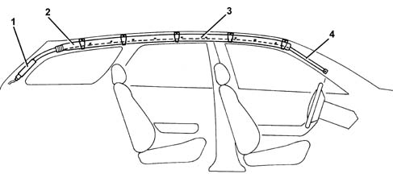
1 - Gas generator 2 - Head Bag module 3 - Head Bag folded bag 4 - Retaining straps
Impact sensors
There is an accelerometric sensor on the centre pillar and on both the left and right pillars which, in the case of a side impact, transmits a signal to the control unit.
This signal is suitably processed inside the control unit which, as a result, decides on the operation of the Side Bag and the Head Bag on the side where the impact has taken place.
Applies to: all engines; production: da 03/02 a 09/03, da 10/03
CONSTRUCTION FEATURES
The vehicle is equipped with an extensive safety system consisting of:
- front seat belt pretensioners
- front driver and passenger Air Bags.
- Side Air Bags
- Window Bag
The system operates:
- in the case of a frontal impact of a certain magnitude, the front seat belt pretensioners and the driver and passenger Air Bags.
- in the case of a side impact of a certain magnitude, the side Air Bag, located in the seat, and the Window Bag, located in the roof panel, on the side of the impact are activated. The Head Bag protects the top area of both the front seat and the rear seat on the side the impact takes place.
SYSTEM COMPONENTS
Refer to the illustration
1 - Electronic control unit 2 - Driver's Air Bag 3 - Passenger Air Bag 4 - Left seat belt pretensioner 5 - Right seat belt pretensioner 6 - Switch disabling passenger Air Bag 7 - Diagnostic socket for checking the system 8 - Warning light in the instrument panel for signalling faults 9 - Warning light in the instrument panel for signalling passenger Air Bag disabling 10 - Side impact sensor on left door pillar 11 - Left Side Air Bag capsule 12 - Side impact pillar on right door pillar 13 - Right Side Air Bag capsule 14 - Right Head Bag 15 - Left Head Bag
Electronic control unit
An electronic control unit manages the entire system by controlling all the components and activating the restraint systems (pretensioners and airbags) as necessary.
Operation in the case of frontal impact
There is an accelerometer sensor inside the control unit whose signal, suitably processed by a microprocessor, makes it possible to determine the extent of an impact and, consequently, to decide whether to activate the pretensioners and the Air Bags.
A second sensor with safety functions gives the enablement for activation of the Air Bags.
The control unit has two different intervention levels:
- at the first level only the pretensioners are activated
- the second level operates both airbags and pretensioners.
Operation in the case of side impact
Accelerometers on both front door pillars detects side impacts and sends a signal to the control unit.
This signal is processed by a microprocessor inside the control unit. This detects the severity of the side impact and decides whether to set off the Side Bag and the Head Bag on the side where impact took place, but only if the safety sensor gives the go ahead.
Applies to: all engines; all production periods
Control unit pin-out
Refer to the illustration.
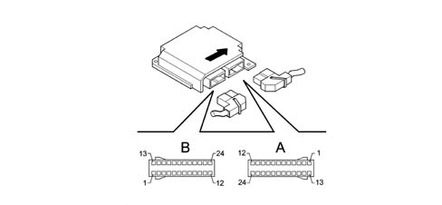
CONNECTOR A (24 way)
PIN | SIGNAL |
|---|---|
6 | Earth |
7 | Supply controlled by the ignition |
9 | Diagnostic line K |
11. | Passenger Air Bag disabling signal |
12. | Passenger's Air Bag disablement warning light signal |
13 | Driver's Air Bag activation (+) |
14 | Driver's Air Bag activation (-) |
15 | Passenger Air Bag activation (+) |
16 | Passenger Air Bag activation (-) |
17 | Air Bag system failure warning light signal |
CONNECTOR B (24 way)
PIN | SIGNAL |
|---|---|
1 | Driver's side sensor signal (+) |
2 | Driver's side sensor signal (-) |
3 | Passenger side sensor signal (+) |
4 | Passenger side sensor signal (-) |
13 | Driver pretensioner activation (+) |
14 | Driver pretensioner activation (-) |
15 | Passenger pretensioner activation (+) |
16 | Passenger pretensioner activation (-) |
17 | Driver sidebag activation (+) |
18 | Driver sidebag activation (-) |
19 | Passenger sidebag activation (+) |
20 | Passenger Side Bag activation (-) |
21 | Driver's Head Bag activation (+) |
22 | Driver's Head Bag activation (-) |
23 | Passenger Head Bag activation (+) |
24 | Passenger Head Bag activation (-) |
For further details see the wiring diagram E7030 AIRBAG
Applies to: all engines; production: da 03/02 a 09/03, da 10/03
Control unit pin-out
The following figure shows the control unit.
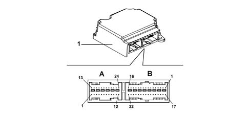
1 - Control unit A - 24-pin connector for facia cable B - 32-pin connector for rear cable
Dashboard cable CONNECTOR A (24-way)
PIN | SIGNAL |
|---|---|
1 | Earth |
2 | E.C.S. sensor earth (N.C.) |
3 | Available for power supply for E.C.S. 2nd sensor (N.C.) |
4 | E.C.S. sensor power supply (N.C.) |
5 | Crash output (N.C.) |
6 | Serial line K for Tester |
7 | Air Bag deactivated light |
8 | Failure light |
9 | Driver's seat belt fastened/not fastened LED (N.C.) |
10 | Passenger Air Bag disabling key (-) |
11 | Passenger Air Bag disabling key (+) |
12 | Power supply (+15v) |
13 | Right rear pretensioner (+) (N.C.) |
14 | Right rear pretensioner (-) (N.C.) |
15 | Left rear pretensioner (+) (N.C.) |
16 | Left rear pretensioner (-) (N.C.) |
17 | Passenger Air Bag 2nd stage (+) (N.C.) |
18 | Passenger Air Bag 2nd stage (-) (N.C.) |
19 | Driver's Air Bag 2nd stage (+) (N.C.) |
20 | Driver's Air Bag 2nd stage (-) (N.C.) |
21 | Passenger Air Bag (1st stage) (+) |
22 | Passenger Air Bag (1st stage) (-) |
23 | Driver's Air Bag (1st stage) (+) |
24 | Driver's Air Bag (1st stage) (-) |
Rear cable CONNECTOR B (32-way)
PIN | SIGNAL |
|---|---|
1 | Driver's seat belt pretensioner (-) |
2 | Driver's seat belt pretensioner (+) |
3 | Passenger seat belt pretensioner (-) |
4 | Passenger seat belt pretensioner (+) |
5 | Driver's Side Air Bag (-) |
6 | Driver's Side Air Bag (+) |
7 | Driver's Window Bag (-) |
8 | Driver's Window Bag (+) |
9 | Passenger Side Air Bag (-) |
10 | Passenger Side Air Bag (+) |
11 | Passenger Window Bag (-) |
12 | Passenger Window Bag (+) |
13 | Left rear Side Air Bag (-) (N.C.) |
14 | Left rear Side Air Bag (+) (N.C.) |
15 | Right rear Side Air Bag (-) (N.C.) |
16 | Right rear Side Air Bag (+) (N.C.) |
17 | Earth |
18 | Available for driver classification input (N.C.) |
19 | Passenger classification input (N.C.) |
20 | Driver's buckle switch (N.C.) |
21 | Passenger buckle switch (N.C.) |
22 | Driver's and passenger buckle switch earth (N.C.) |
23 | Rear Bags deactivated LED (N.C.) |
24 | Power supply for driver's side impact sensor |
25 | Power supply for passenger side impact sensor |
26 | Driver's side impact sensor earth |
27 | Passenger side impact sensor earth |
28 | not used |
29 | not used |
30 | Switch for rear bag disabling (+) (N.C.) |
31 | Switch for rear bag disabling (-) (N.C.) |
32 | Earth |
Applies to: all engines; production: da 03/02 a 09/03, da 10/03
Driver's Air Bag
The Air Bag is a passive safety device made up of a bag which, in the case of a frontal impact, automatically inflates placing itself between the bodies of the vehicle occupants and the structure of the front part of the passenger compartment.
The driver's Air Bag module is located in the centre of the steering wheel; it is fitted on a tilting plate which enables the horn to be operated.
The plate, fixed to the steering wheel by two bolts, houses the metal container with the folded bag and the gas generator device.
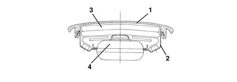
1 - Cover 2 - Metal container 3 - Folded bag 4 - Gas generator
The gas generator can be electrically activated by a signal coming from the electronic control unit.
A propellent charge is then triggered, which releases a compressed gas (Argon) which expands in the bag which has a total capacity of around 45 litres.
The bag deflates immediately after it has been inflated, thanks to the permeable nature of the material from which it is made.
The module plastic cover opens upwards along the pre-determined breakage lines which allow the bag to come out completely.
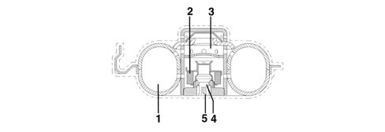
1- Compressed argon 2 - Propellant charge 3 - Inflation openings 4 - Electrical primer 5 - Electrical connection
Clock spring
A clock spring device allows the Air Bag module connecting cables, fitted in the steering wheel, to follow the rotation of the latter without danger of breaking.
This device is fitted on the steering column switch unit and consists of two plates, the lower one fixed to the steering column switch unit and the upper wheel fixed to the steering wheel.
The connecting cables for the module and the buttons on the steering wheel are wound around inside the two plates allowing them to follow the movement of the steering wheel.
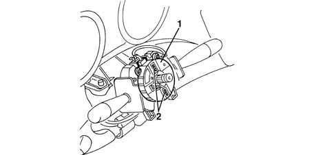
1- Clock spring 2 - Safety springs
A safety device, consisting of two springs, automatically locks the rotation of the two plates when the steering wheel is removed from the clock spring.
This prevents the top plate, no longer attached to the steering wheel, from rotating freely and so winding or unwinding the clock spring which might then break.
When refitting the steering wheel, the device automatically unlocks.
If, for any reaon, the upper plate rotates in relation to the lower one and its original position prior to removal can no longer be identified, it is essential to replace the clock spring.
For more details, 5580C12 clock spring for air bag module on steering wheel r r
Passenger side air bag
The passenger airbag is located on the facia, above the glove compartment
The composition and operation are the same as the driver's Air Bag, except for the dimensions of the bag which is larger: about 90 litres.
The passenger module is fixed directly to the vehicle crossmember by a special bracket.
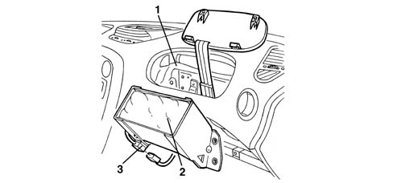
1- Vehicle crossmember 2 - Passenger's Air Bag module 3 - Electrical connection
Module flap
A padded flap which is integrated in the dashboard allows the bag to come out correctly when it inflates.
It is connected to the actual dashboard by means of two hooks and two springs with a pre-set yield point. It is also fixed to the crossmember by a bracket and three retaining belts, which prevent the inflation of the bag detaching the flap from the dashboard.
In the case of the intervention of the Air Bag, the flap opens upwards, breaking the two springs, thereby allowing the bag to come out completely and correctly.
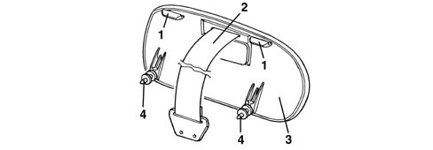
1 - Retaining hooks 2 - Retaining belts 3 - Flap 4 - Clips with pre-established break point
Passenger air bag disablement switch
A switch which can be operated by the vehicle key allows the passenger Air Bag to be enabled (ON) or disabled (OFF). It is positioned at the edge of the dashboard, passenger side, and is only accessible with the door open.
In this case, the control unit excludes the activation of the passenger Air Bag, but enables the operation of the pretensioner: this is because if a passenger is present, but the switch has been incorrectly turned OFF, the Air Bag does not intervene, but at least the pretensioner does.
When the key is turned to OFF, the control unit also controls the activation of a passenger air bag disablement warning light on the instrument panel.
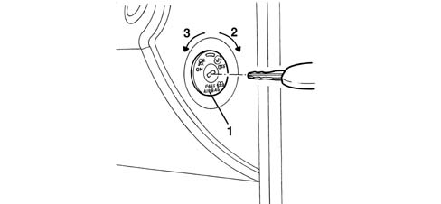
1 - Key switch 2 - OFF position: passenger's Air Bag disabled 3 - ON position: passenger's Air Bag enabled
Pretensioners
Pretensioners are pyrotechnic devices which can be electrically activated by a signal coming from the electronic control unit integrated in the front seat belt reel.
They intervene, in the case of an impact of a certain magnitude, to recover the inevitable extension of the belts due to the action of the body weight, keeping the body close to the seat backrest.
At the end of the operation, the belt remains locked, thereby signalling that the device has been operated.
Operation
The gas generator consists of a detonator which can be electrically activated by a signal coming from the electronic control unit.
The pressure of the gas which is produced by the generator acts on the surface of a piston and creates a force which moves it upwards, within a special cylinder.
The movement of the piston upwards, affects a steel cable, the end of which is fixed to the flange of the winder reel. This produces a rotary movement of the reel, instantly rewinding the belt by several centimetres.
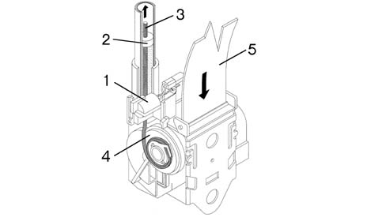
1 - Gas generator 2 - Piston 3 - Steel cable 4 - Winder reel 5 - Seat belt
Applies to: all engines; all production periods
SIDE IMPACT SENSORS
There is an accelerometric sensor on the two front door pillars which, in the case of a side impact, transmits a signal to the control unit.
This signal is suitably processed inside the control unit which, as a result, decides on the operation of the Side Bag and the Window Bag on the side where the impact has taken place.
The control unit is fitted with a second safety sensor which detects side impact (in the same way as the front impact sensor) and enables the sidebag on side where the impact is detected
This sensor is positioned in such a way that it detects iimpact only on the side where it is located: e.g. the sensor on the driver's pillar detects only impact from the right and does not detect impact from the left.
1 - Arrow indicating the direction of travel 2 - Sensor 3 - Electrical connection
Applies to: all engines; production: da 03/02 a 09/03, da 10/03
SIDE IMPACT SENSORS
The side impact satellite sensor is a different shape compared with the one adopted previously but the specifications, composition and operation have not changed.
Components
The diagram below illustrates the new type of sensor.
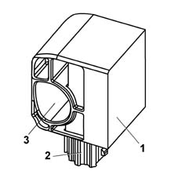
1 - Side impact satellite sensor 2 - Connecting connector 3 - Centring pin
Applies to: all engines; production: da 03/02 a 09/03, da 10/03
SIDEBAG MODULE
The sidebag is housed in the outer part of each of the front seats.
It consists of a container which houses the gas generator and the folded bag.
This container is enclosed inside a special outer cover, which complements the seat trim.
The gas generator consists of a detonator which can be electrically activated by a signal coming from the electronic control unit.
A propellent charge is then triggered, which releases a compressed gas (Argon). This expands into the bag, which is smaller than the front bag.
After being inflated by the gas, the bag deflates immediately through a hole on the rear.
The module plastic cover opens upwards along the pre-determined breakage lines which allow the bag to come out completely.
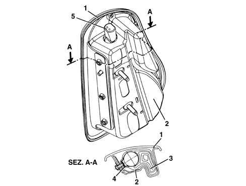
1 - Outer cover 2 - Container 3 - Folded bag 4 - Gas generator 5 - Electrical connection
WINDOW BAG
The Window Bag provides further protection for the occupants of the front seats and also for the occupants of the rear seats in the case of a side impact.
In particular, it makes it possible to improve the degree of protection for the occupants of the front seats because, in addition to the chest area which is already protected by the Side Bags, it also protects the head.
It also offers the first protection to the occupants of the rear seats.
The device consists of a Window Bag curtain which inflates and positions itself between the occupant's head and the side windows.
1 - Window Bag curtain in fully inflated position
The Window Bag folded bag is located under the roof panel, whilst the rear pillar houses the gas generator.
The module containing the bag is shaped like a long tube: it is fastened at five anchorage points to the roof side member. The mounting brackets, with pre-set breaking points, allow the bag to unfold correctly downwards in the case of operation.
The front pillar cover is flexibly fastened so that it can detach from its housing to allow the Window Bag to unfold but, to avoid swamping the passenger compartment, it is retained by a spring.
The cut and the stitching of the bag ensure that if the bag is filled with gas it inflates evenly and assumes the ideal shape for protecting the occupants even if they are different sizes.
Special breather holes allow the bag to inflate immediately after activation.
To keep the Window Bag module in the correct position even during inflation, it is secured to the bodyshell by means of a retaining strap at the front: in this way, if the windows break during the impact and the roof side member is distorted, the module always keeps in the correct position in relation to the occupants it is protecting.
1 - Gas generator 2 - Window Bag module 3 - Window Bag folded bag 4 - Retaining straps
'AIR BAG SYSTEM FAILURE SIGNAL' WARNING LIGHT
During starting (key in ON position), the red coloured 'Air Bag failure' warning light comes on for about 4 seconds (initial self-test stage) and then goes out.
The warning light remains on or comes on, during the normal operation of the vehicle, in the following cases:
- the control unit detects a fault in the Air Bag system
- the control unit detects an impact which activates the system, even partially (pretensioners only)
- the control unit detects a fault in the actual warning light connection circuit.
'PASSENGER AIR BAG DISABLED' WARNING LIGHT
During starting (key in ON position), the orange coloured 'passenger Air Bag disabled' warning light comes on for around 4 seconds.
If the key for the manual disabling of the passenger Air Bag is switched OFF, the warning light remains on.
SYSTEM AUTODIAGNOSIS
The control unit carries out a continuous autodiagnosis of the system operation. In particular:
- it detects and memorizes any faults
- it recognizes the various components and the type of fault
- it signals the onset of these faults via the special warning light in the instrument panel:
- if a fault is detected with the manual disabling switch, it is considered in the OFF state and therefore the operation of the passenger Air Bag is inhibited.
The faults stored in the control unit memory can be cancelled, after the fault has been repaired, using the Examiner or other diagnostic equipment.
System activations following a particularly serious impact are memorized by the control unit.
In the case of an impact which has caused the complete system to be activated (Air Bag and pretensioners) it is not possible to cancel the control unit memory and it must therefore always be replaced.
If, on the other hand, only the pretensioners are activated, the memory can be cancelled twice. The control unit only has to be replaced if it is activated a third time.
As in the case of a side impact, the memory can be cancelled twice. Only in the case of a third activation, irrespective of which of the two sides it involves, should the control unit be replaced.
Topics linked from this page (2)
Topics that link to this page (11)
- Introduction - STEERING CONTROL AND LINKAGE
- 4110A steering control
- Introduction - INSTRUMENT PANEL
- N20 HORNS NOT WORKING
- E7030 AIRBAG - Description
- E7030 AIRBAG - Description
- E7030 AIRBAG - Description
- E7030 AIRBAG - Description
- E7030 AIRBAG - Description
- E7030 AIRBAG - Description
- E7030 AIRBAG - Description